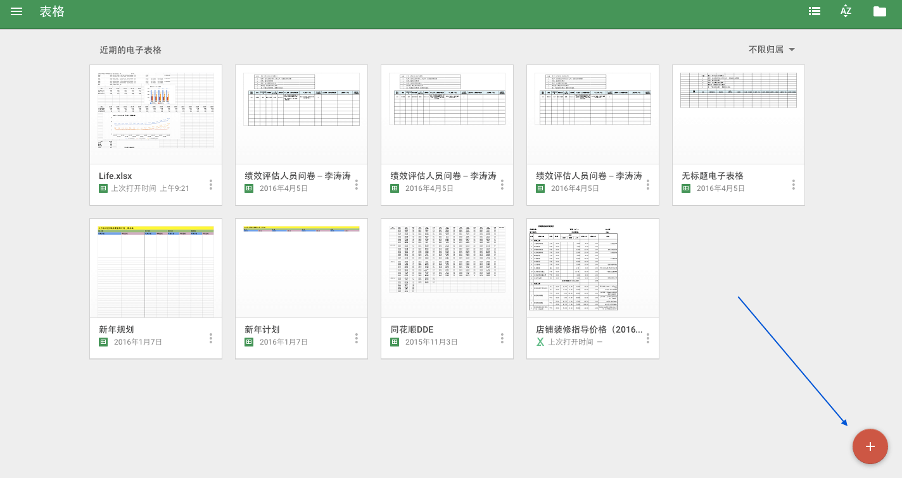
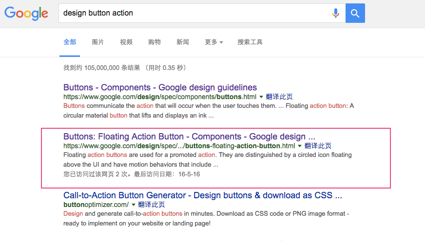
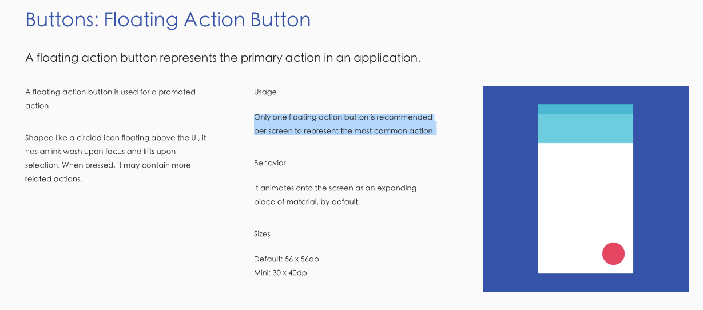
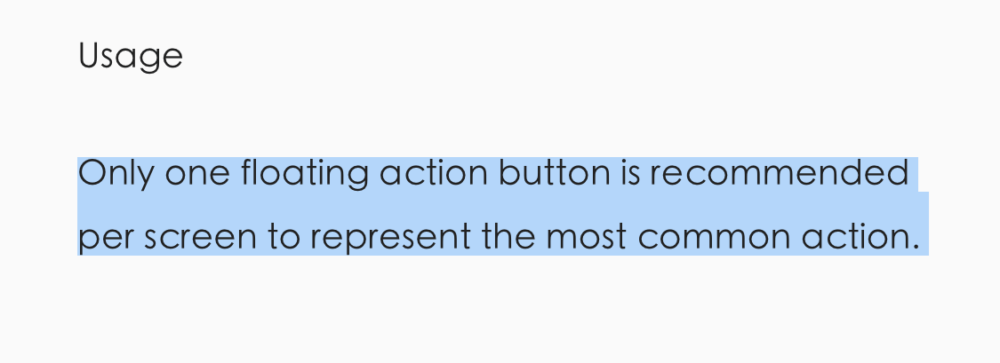
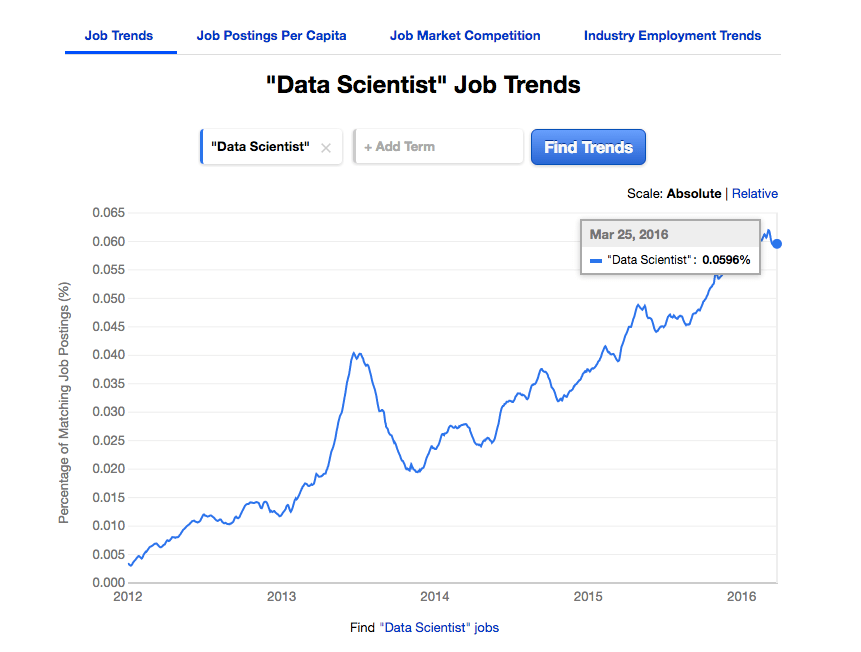
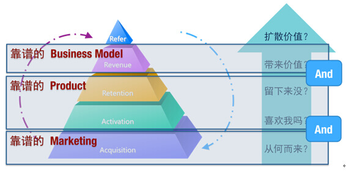
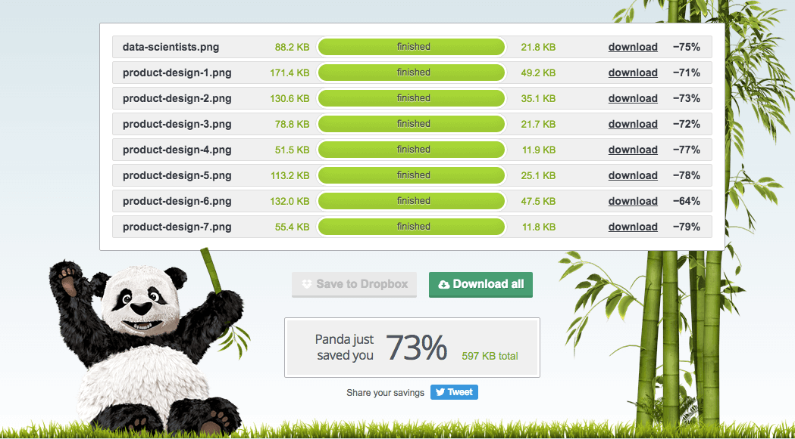
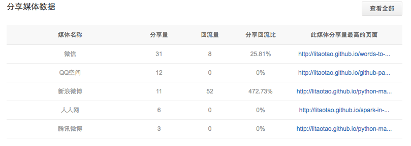

一个工程师对产品的唬说扒道
2016-05-15
写在前面
感谢公司开放的企业文化；
我是来自优矿的量化工程师，闲时喜欢对自己用的产品思考和研究，公司有很多这方面的专家，他们在产品方面有很多沉淀和见解。今天我主要从即时客服这个功能点，以用户的角度和大家分享一些我对产品设计的看法，共通探讨一下如何定义一个好的产品，以及如何设计一个好的产品；此外，我还会分享一些自己使用 CNZZ, Google Analytics, Google Search Console, GrowingIO, Baidu Share 工具来尝试用户增长的一些想法。
1. 从几个问题说起
- 有没有哪个软件让你眼前一亮？
- 有没有哪个应用，在你使用他不到3分钟就 say goodbye？
- 是什么让你在众多同类软件中，选择当前正在用的这一款？
- 是什么原因决定了一个产品的销量？
2. Microsoft Office, WPS, Google Docs
第一次听说 google docs 是在大学时期找工作的时候，当时听说 google 在电话面试的时候会要求在 google docs 上写代码。当时我很纳闷：电话面试？写代码？电话面试的时候面试官怎么看你写的代码呀？
后来才用了 google docs 之后才知道，原来 docs 功能已经超出我的想象了：
- 覆盖了基本的 office 功能
- 多用户实时在线协同
- 界面简洁轻便
后来自从开始用 google docs 之后，我几乎再也没有碰过 ms office［事实上大学时期也只用 wps 了］，偶尔会用到 wps。
我经常在思考，为什么我会从 Microsoft Office 转向 WPS，后来为什么又会从 WPS 转到 Google Docs？后来在工作中，闲暇时会琢磨琢磨自己用的一些应用和逛的一些网站，在思考和研究那些应用和网站的时候，我会发现，其实真理是永恒不变的：成功的产品都是相似的，失败的产品各有所因。
言归正传，回到我们今天的主题：如何设计一个应用的客服通道？
上面之所以要讲我的 Microsoft Office, WPS, Google Docs 故事，其实是想引出我最喜欢的 google docs 的一个设计，也是今天的主角，那就是：Floating Action Button。

3. Floating Action Button ?
其实我一开始也不知道居然有专门这样一个设计手册，而且还是 google 出的。当时只是觉得有这么多应用采用 google docs 右下角 button 的设计，应该会有一个地方来说明这种设计好处。所以当我 google 关键字 design button action 的时候，我发现了宝藏：



4. 如何设计一个应用的客服通道
上面说了这么多，似乎和今天的 如何设计一个应用的客服通道 没有多大联系，其实不然，下面我们就开始来谈谈今天的主题，然后再看看上面所说的内容和即时客服的那些关系。
4.1 客服的历史
- 压根儿就没有客服
- 电话客服
- 优点：沟通及时；
- 缺点：通讯成本高；复杂问题指导难度大；记录难度稍大；
- 邮件客服
- 优点：通讯成本低；方便记录问题；指导难度低；
- 缺点：沟通不及时；客户保密性弱；
- 通讯软件1v1客服
- 优点：沟通及时；通讯成本低；指导难度低；记录难度一般；
- 缺点：客户保密性弱；
- 用户交流群客服
- 优点：沟通即时；通讯成本低；指导难度很低；记录难度稍难；
- 缺点：客户保密性很弱；
4.2 什么是即时客服
即提供给客户，允许实时与客服人员进行咨询的工具，常见的一些：
- 平台内置：阿里旺旺
- 三方平台：营销 QQ
4.3 即时客服的优缺点
- 优势：即时性，提供用户高效的体验，第一时间探知用户心理，进行二次推销
例子 ：假设阿里旺旺是仅提供邮件功能？
- 缺点：无法应对大规模访问
例子 ：淘宝大店都会有数十个在线客服，双十一期间基本很难及时收到客服回复
4.4 Best Practice
我一直相信，没有好与不好的设计，只有适用与不适用的设计。
5. 即时客服方案
- 商业方案：
- 开源方案：
6. 题外话：关于增长
其实关于增长的话题，我觉得跟客服的发展历史一样，都是当问题积累到一个点，再加以外部因素的驱动得以爆发。增长这个话题，我觉得是伴随最近5年大数据，云计算，互联网产业化的爆发式发展而引出的话题。而有一个新兴的职业，也伴随增长这个话题而出现在现在的职场当中：数据科学家。

6.1 AARRR 模型

6.2 Why：Sharp arms, broaden lens
- 推广个人博客：litaotao.github.io
- 结识技术牛人：多做技术交流，不要闭门造车，坐井观天
- 学习运营技能：扩展自己的知识面
- 学习产品分析技能：扩展自己的知识面
- 学习市场研究技能：扩展自己的知识面，案例参考：母婴市场研究.pdf
6.3 指标：Growth, Retention, Engagement
Growth, Retention 和 Engagement 是做增长的三个大指标：
- Growth: 增长数据
- Retention: 留存数据
- Engagement: 参与/活跃度数据
Growth, Retention 和 Engagement 是一套比较完善的做增长所需要关注的指标，因为我只维护自己的博客，所以其实只需要关心其中的一小部分指标就足够了。同样的道理，并不是所有的产品都需要做增长，特别是大多数专业领域的商业产品，比如说：恒生电子的 homs 系统；但有的产品是必须要做增长，特别是大多数社交软件，受众群广的对个人的产品，比如说：facebook，twitter，微博，微信，qq，keep。
下面是我关注的一些指标：
- CNZZ
- 新老访客分布 : 查看新老访客占比，希望老访客稳定在一个区间内
- 来路域名／来路页面／站内入口 : 推广引流效果，制定推广计划
- 浏览器分布 : 制定浏览器兼容计划
- 分辨率分布 : 制定页面优化方案
- 平均访问时长 : 检验文章质量问题
- 热点图 : 网站排版优化
- Google Search Console
- 查询词 : SEO 与内容优化
- 内容关键字 : SEO 与内容优化
- Google Analytics
- 实时 -> 概览［用处不是特别大，但是很炫酷］
- 受众群体 -> 用户流量 : 用户流失分析，内容优化［推荐系统的重要性］
- 行为 -> 网站内容 -> 所有页面 : 内容优化，页面质量检查
- 行为 -> 网站速度 : 速度优化利器
- 速度优化之图片压缩：本文用到的
8张图片，压缩后节省73%的大小，节省597kb的网络传输量，相当于每千次 pv 节省 597MB流量； 
- 速度优化之图片压缩：本文用到的
- Baidu Share
- 分享媒体，分享量，会流量，回流比，分享页面

7. 彩蛋
免费的 google 搜索网站［都是从 CNZZ 上的 来路域名 这个项目里看到的］：
- http://soguge.com/
- http://www.gugesou.cn/
- http://isfox.com/
- https://g.xsou.co/
- http://www.sov5.com/
- http://www.qiangwaiba.com/google
- http://www.googto.com/
- https://www.laiguge.com/
- http://search.twcc.com/
- https://kuaiguge.com/